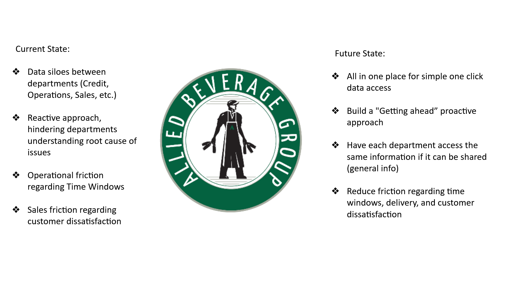
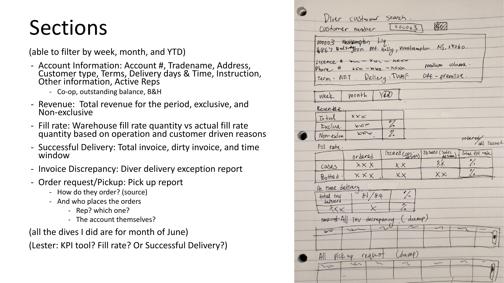
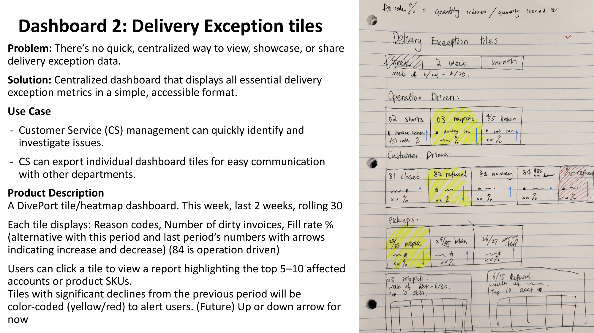

Overview
Allied Beverage Group is one of New Jersey's largest beverage distributors, serving over 1,000 accounts across on- and off-premise channels. When the internship began, the core problem was clear: data lived in silos. Customer Service, Operations, Sales, and Credit each had their own systems — but no shared view of what was happening with any given account. The result was a reactive culture, slow resolutions, and friction that compounded across departments.
Over 8 weeks, three dashboard concepts were designed and developed in close collaboration with the Customer Service Manager, CX Specialist, Salesforce admins, Diver BI specialist, and IT Manager — two of which were implemented before the end of the internship.
The Problem
- Data siloed across Credit, Operations, Sales, and Customer Service
- No centralized account view — reps had to pull from multiple systems to answer a single customer call
- Delivery exceptions tracked manually, with no visibility into patterns or trends
- Reactive approach: issues surfaced only after they had already escalated
Goal: Build a proactive, unified data layer — so every department could get ahead of issues instead of chasing them.

Process
Started with stakeholder interviews across CS, Operations, and IT to map what each department actually needed to see and what data existed to support it. Confirmed data requirements with stakeholders, sketched layouts, and iterated through multiple rounds of review and sign-off before handoff. Both dashboard projects went from rough sketch to approved specification within 8 weeks.
The Dashboards
Dashboard 01
Salesforce Account Profile & CX Scorecard
When a customer called with an issue, reps had to navigate multiple disconnected systems — revenue history lived somewhere, delivery data somewhere else, invoice discrepancies in another tool entirely. The solution: a unified Salesforce customer scorecard, accessible by account number, chain, claim code, or date range. Any CS rep or manager can pull up a complete account view in one click.
What it shows:
- Account info: tradename, address, license number, terms, delivery days/times, active reps
- Revenue: total, exclusive vs. non-exclusive, broken down by period
- Fill rate: warehouse-issued vs. customer-driven, with percentage comparison
- Successful delivery: total invoices, dirty invoices, on-time delivery rate
- Invoice discrepancies: linked directly to Diver exception data
- Order source and rep assignment history

Early wireframe sketch mapping the Salesforce account profile sections and data hierarchy
Data requirements were mapped across departments, availability confirmed with IT, layout and interaction logic designed, then presented to Salesforce admins and stakeholders before coordinating handoff to the Salesforce IT specialist for build. The Salesforce account scorecard went live July 22nd.
Dashboard 02
Customer Service Salesforce Dashboard
CS management had no quick way to see complaint trends, case volumes, resolution patterns, or account-level issues across the full customer base at a glance. This dashboard gives CS managers the ability to spot recurring issues, prioritize high-volume accounts, and track resolution performance — all without pulling a single manual report.
What it shows:
- Type and reason report — 3.8K total records across categories
- Customer complaints/CX case volume by month — over a year of trend data
- Customer experience type and reason breakdown
- CS queue by type, year to date
- Accounts with the most open cases, by type and reason
- CTS time-to-resolution tracking

The Customer Experience Dashboard live in Salesforce — filterable by account, chain, claim code, and date; showing complaint trends, case volume by month, and accounts with most open cases
Dashboard 03
Diver Delivery Exception Heatmap
There was no centralized way to view, investigate, or share delivery exception data. With over 9,400 exception instances in a single month across 15+ reason codes, patterns were completely invisible at the management level.
The solution: a DivePort heatmap dashboard showing delivery exception trends across three time windows — this week, last 2 weeks, and rolling 30 days.
What each tile shows:
- Reason code category (e.g. 02 Shorts, 03 Mispick, 82 Refusal)
- Number of dirty invoices that period
- Fill rate percentage with period-over-period comparison
- Color-coded alerts: yellow/red for significant declines from prior period
- Drill-down to top 5–10 affected accounts or SKUs per exception

Hand-drawn wireframe: heatmap tile layout organized by operation-driven vs. customer-driven exception categories
Key data finding: In June 2025 alone — 3,230 shorts, 2,222 "did not request item" cases, 878 broken/damaged, 749 mispicks, and 694 customer refusals. None of this was visible to management in real time. The dashboard was designed to surface these patterns at a glance, with drill-down to the accounts and SKUs driving each category.
After full stakeholder review and sign-off, the complete build specification was handed off to the IT Manager for development.
Outcomes
✦ Salesforce CX Dashboard and Account Scorecard implemented July 22nd
✦ Diver Delivery Exception Dashboard handed off to IT with full specification
✦ Presented to department heads across CS, Operations, and IT — received positive approval
✦ Projected $20,000+ monthly savings by surfacing delivery failures earlier in the resolution cycle
Reflection
This was a first experience designing for enterprise BI tools rather than a visual prototyping environment — and the constraint was clarifying. It wasn't enough to sketch something clean in Figma; the work required understanding what data actually existed, what the tools could render, and what each stakeholder needed to act on. The most valuable skill practiced here wasn't layout — it was stakeholder communication. Getting sign-off from CS managers, IT, and department heads required translating between what users wanted to see and what systems could actually deliver.